Overview
Purpose
To help users explore Batman's appearances across various media: films, TV series, animated works, and video games.
Audience
People who are interested in understanding, following, or diving deeper into Batman's massive media presence
Branding
Website Logo

Style Guide
Color Palette
Palette URL:
https://coolors.co/000000-36454f-808080-ffffff-003366| Primary | Secondary | Accent 1 | Accent 2 | Accent 3 |
|---|---|---|---|---|
| [#FFF] | [#000] | [#808080] | [#36454F] | [#036] |
Typography
Heading Font: Bebas Neue
Paragraph Font: Merriweather
Normal paragraph example
Batman is a fictional superhero created by DC Comics. His real name is Bruce Wayne, a billionaire industrialist and philanthropist who witnessed the murder of his parents as a child. This traumatic event drives him to fight crime in Gotham City. Unlike many superheroes, Batman has no superpowers—instead, he relies on his intelligence, detective skills, martial arts training, and advanced technology.
Colored paragraph example
He wears a dark costume designed to instill fear in criminals and often operates from the shadows. His iconic gear includes the Batmobile, a utility belt filled with gadgets, and a cape that allows him to glide. Batman is often called the Dark Knight or the World's Greatest Detective, and he's known for his complex moral code and determination to uphold justice without killing.
Navigation
Content
Home

Batman is a fictional superhero created by DC Comics. His real name is Bruce Wayne, a billionaire industrialist and philanthropist who witnessed the murder of his parents as a child. This traumatic event drives him to fight crime in Gotham City. Unlike many superheroes, Batman has no superpowers—instead, he relies on his intelligence, detective skills, martial arts training, and advanced technology.
He wears a dark costume designed to instill fear in criminals and often operates from the shadows. His iconic gear includes the Batmobile, a utility belt filled with gadgets, and a cape that allows him to glide. Batman is often called the Dark Knight or the World's Greatest Detective, and he's known for his complex moral code and determination to uphold justice without killing.

Movies

Batman
The Dark Knight of Gotham City begins his war on crime with his first major enemy being Jack Napier, a criminal who becomes the clownishly homicidal Joker.

Batman Returns
While Batman deals with a deformed man calling himself the Penguin wreaking havoc across Gotham with the help of a cruel businessman, a female employee of the latter becomes the Catwoman with her own vendetta.
Batman Begins
After witnessing his parents' death, billionaire Bruce Wayne learns the art of fighting to confront injustice. When he returns to Gotham as Batman, he must stop a secret society that intends to destroy the city.

The Dark Knight
When a menace known as the Joker wreaks havoc and chaos on the people of Gotham, Batman, James Gordon and Harvey Dent must work together to put an end to the madness.


The Dark Knight Rises
Bane, an imposing terrorist, attacks Gotham City and disrupts its eight-year-long period of peace. This forces Bruce Wayne to come out of hiding and don the cape and cowl of Batman again.

Batman: Under The Red Hood
There's a mystery afoot in Gotham City, and Batman must go toe-to-toe with a mysterious vigilante, who goes by the name of Red Hood. Subsequently, old wounds reopen and old, once buried memories come into the light.
Batman: Bad Blood
Bruce Wayne is missing. Alfred covers for him while Nightwing and Robin patrol Gotham City in his stead. And a new player, Batwoman, investigates Batman's disappearance.

The Lego Batman Movie
A cooler-than-ever Bruce Wayne must deal with the usual suspects as they plan to rule Gotham City, while discovering that he has accidentally adopted a teenage orphan who wishes to become his sidekick.

Games
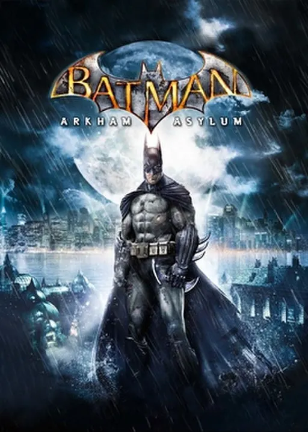
Batman: Arkham Asylum
Batman: Arkham Asylum plunges players into the depths of Gotham's infamous psychiatric facility, where the Joker's sinister plan unfolds with chilling precision. After a suspiciously easy capture, the Clown Prince of Crime seizes control of Arkham Island, turning the asylum into a twisted playground for Gotham's most deranged villains, including Harley Quinn, Scarecrow, Bane, Poison Ivy, and Killer Croc. Arkham Asylum delivers a gripping, cinematic experience that redefines what it means to be Batman, trapped in the very heart of darkness.
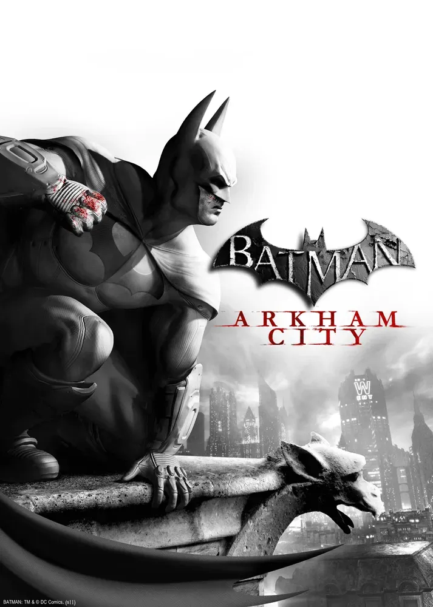
Batman: Arkham City
Batman: Arkham City builds upon the intense, atmospheric foundation of Batman: Arkham Asylum, sending players flying through the expansive Arkham City - five times larger than the game world in Batman: Arkham Asylum - the new maximum security "home" for all of Gotham City's thugs, gangsters and insane criminal masterminds. Featuring an incredible Rogues Gallery of Gotham City's most dangerous criminals including Catwoman, The Joker, The Riddler, Two-Face, Harley Quinn, The Penguin, Mr. Freeze and many others, the game allows players to genuinely experience what it feels like to be The Dark Knight delivering justice on the streets of Gotham City.
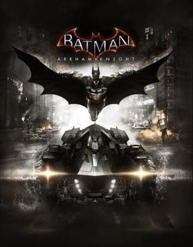
Batman: Arkham Knight
Batman™: Arkham Knight brings the award-winning Arkham trilogy from Rocksteady Studios to its epic conclusion. Developed exclusively for New-Gen platforms, Batman: Arkham Knight introduces Rocksteady's uniquely designed version of the Batmobile. The highly anticipated addition of this legendary vehicle, combined with the acclaimed gameplay of the Arkham series, offers gamers the ultimate and complete Batman experience as they tear through the streets and soar across the skyline of the entirety of Gotham City. In this explosive finale, Batman faces the ultimate threat against the city that he is sworn to protect, as Scarecrow returns to unite the super criminals of Gotham and destroy the Batman forever.
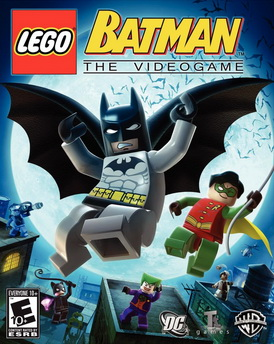
LEGO Batman: The Videogame
When all the villains in Arkham Asylum team up and break loose, only the dynamic duo is bold enough to take them on to save Gotham City. The fun of LEGO, the drama of Batman and the uniqueness of the combination makes for a comical and exciting adventure in LEGO Batman: The Videogame. Play as Batman and his sidekick Robin as you build, drive, swing and fight your way through Gotham City capturing escaped villains including The Joker, Penguin, Scarecrow and more. Then, jump into the story from the other side and play as Batmans foes! Enjoy the power you wield and battle Batman while spreading chaos throughout the city. There is no rest for the good (or evil!).
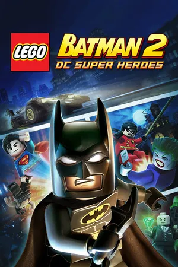
LEGO Batman 2: DC Super Heroes
Legends Unite! The Dynamic Duo of Batman and Robin join other famous super heroes from the DC Universe including Superman, Wonder Woman and Green Lantern to save Gotham City from destruction at the hands of the notorious villains Lex Luthor and the Joker.
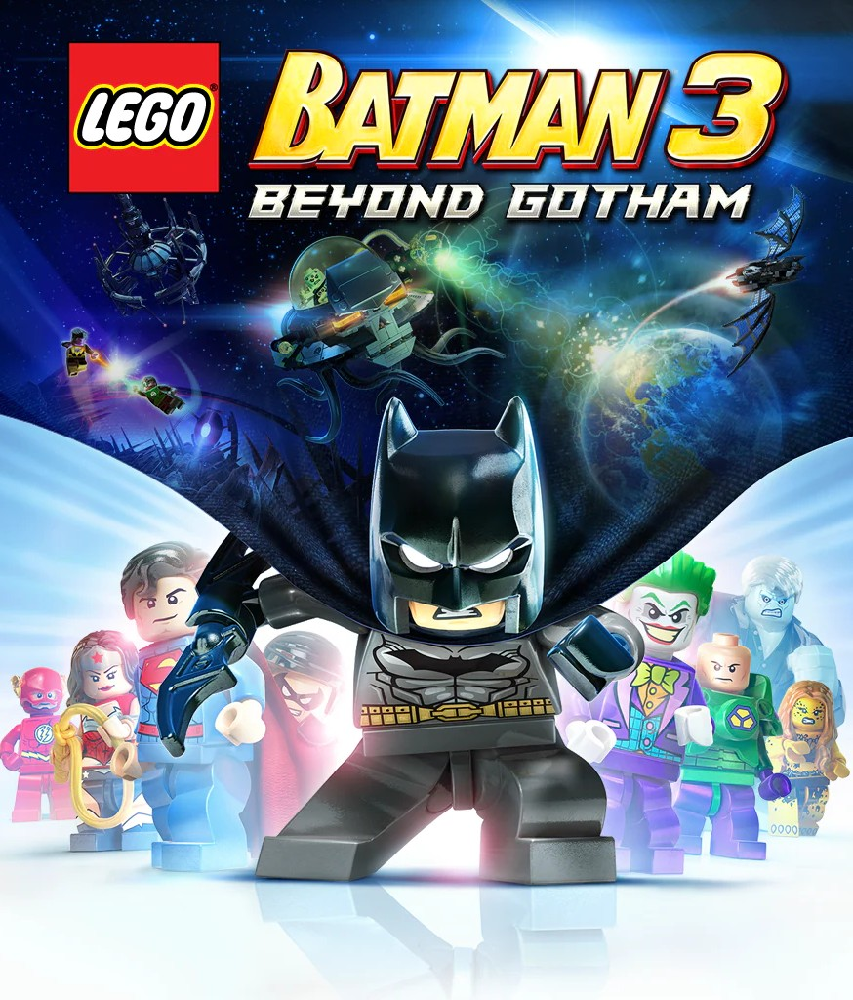
LEGO Batman 3: Beyond Gotham
In LEGO Batman™ 3: Beyond Gotham, the Caped Crusader joins forces with the super heroes of the DC Comics universe and blasts off to outer space to stop the evil Brainiac from destroying Earth. Using the power of the Lantern Rings, Brainiac shrinks worlds to add to his twisted collection of miniature cities from across the universe. Now the greatest super heroes and the most cunning villains must unite and journey to different Lantern Worlds to collect the Lantern Rings and stop Brainiac before it's too late.
Contact
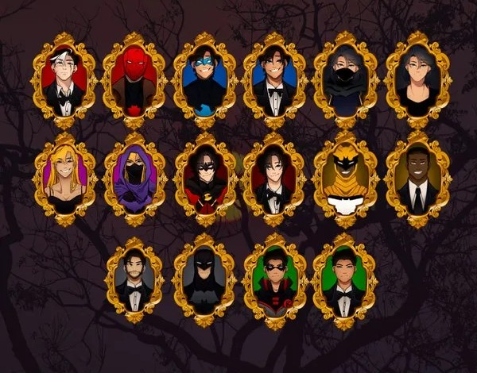
Site Map
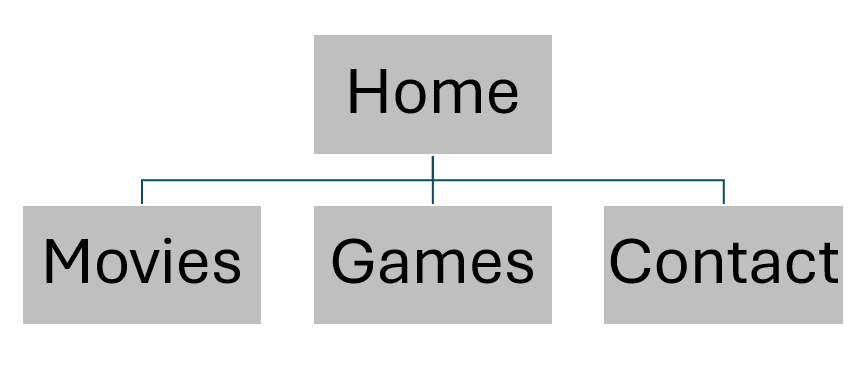
Wireframes
Home
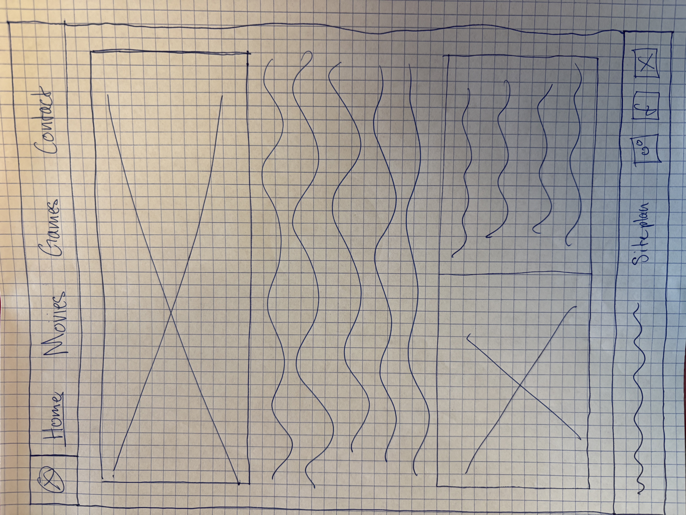
Movies
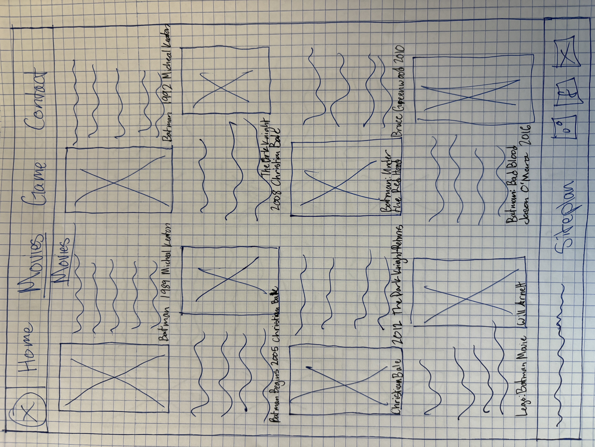
Games
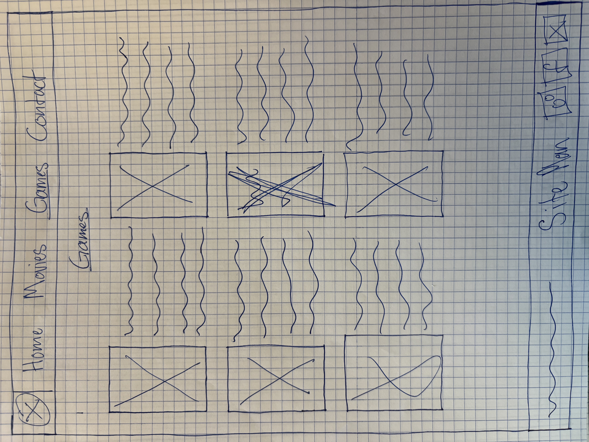
Contact
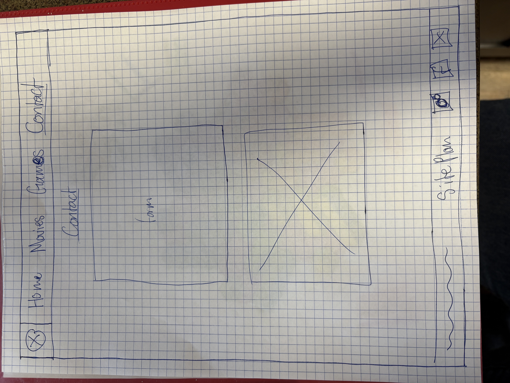